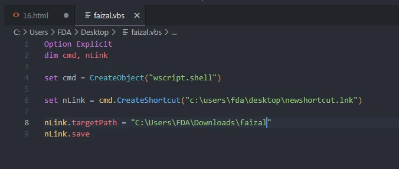
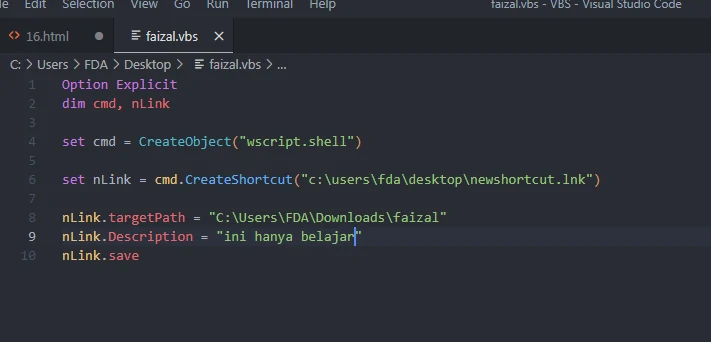
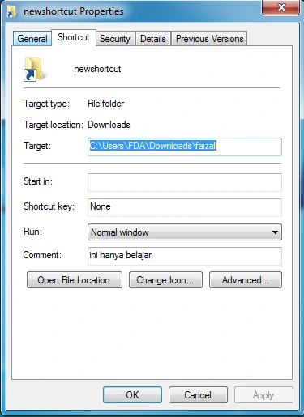
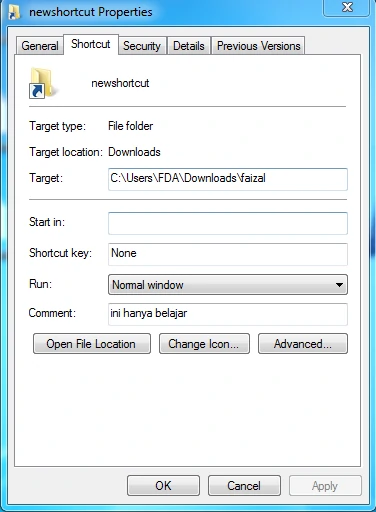
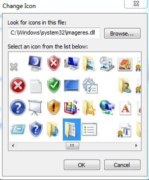
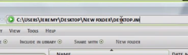

Create Shortcuts
Example

Hasil :
Deskripsi shortcut

Hasil :

Icon shortcut
untuk melihat icon apa aja
klik kanan shortcut » properties
change Icon...

pilih icon

kemudia masuk / klik shortcutnya
kemudia tambahkan di URL folder \desktop.ini
